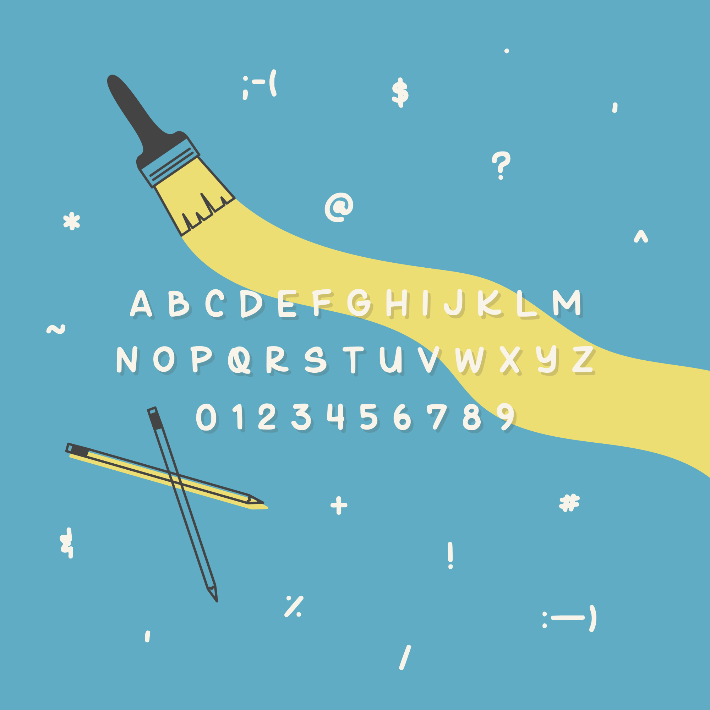

JAMES
HUA.
PLANTBRUSH.
A simple font I crafted that resembles my handwriting. I aimed to capture a sense of nature with organic brush stokes and slightly variable line weights. Feel free to use on any projects, documents or graphics as necessary. Don't forget to credit me!
